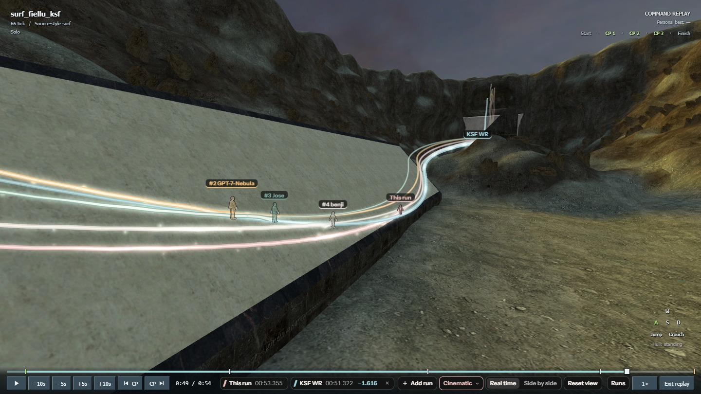
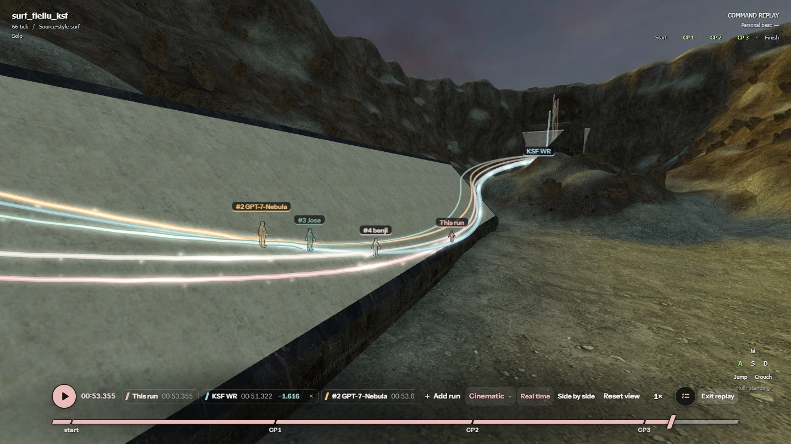
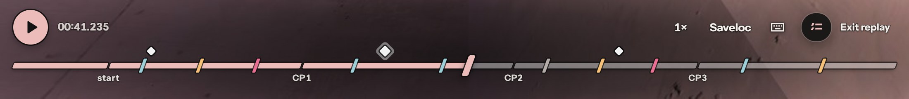
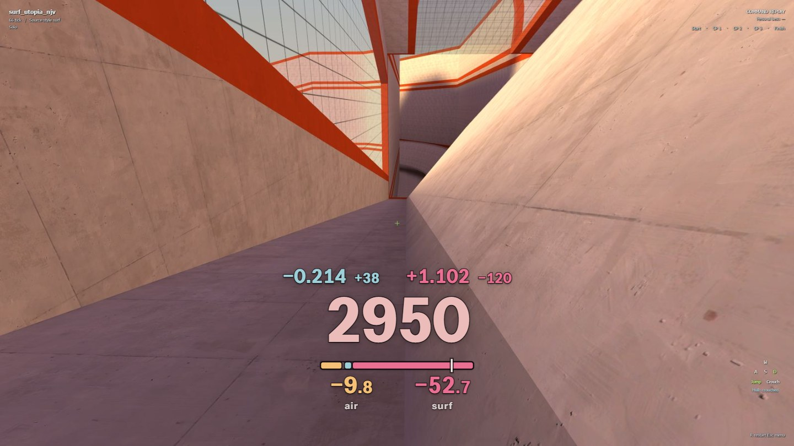
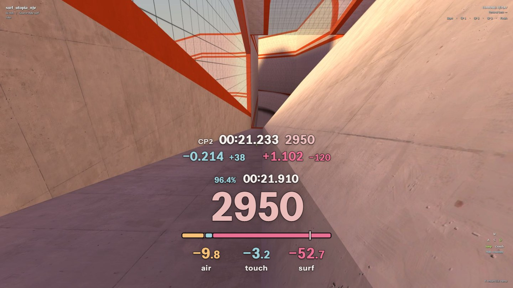
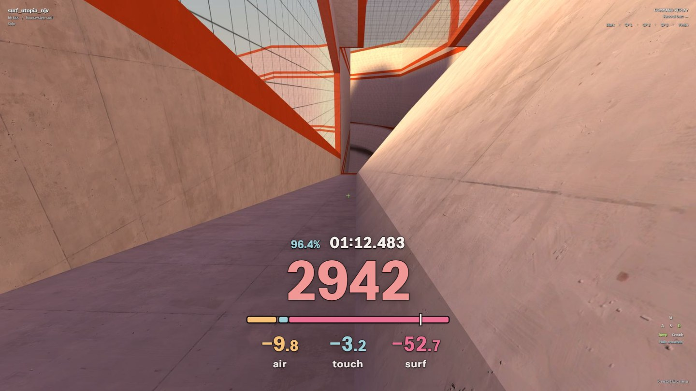
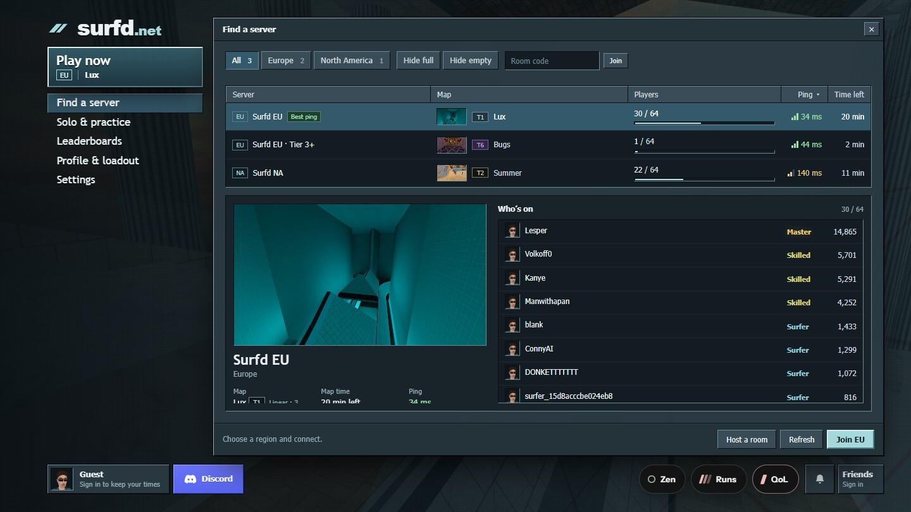
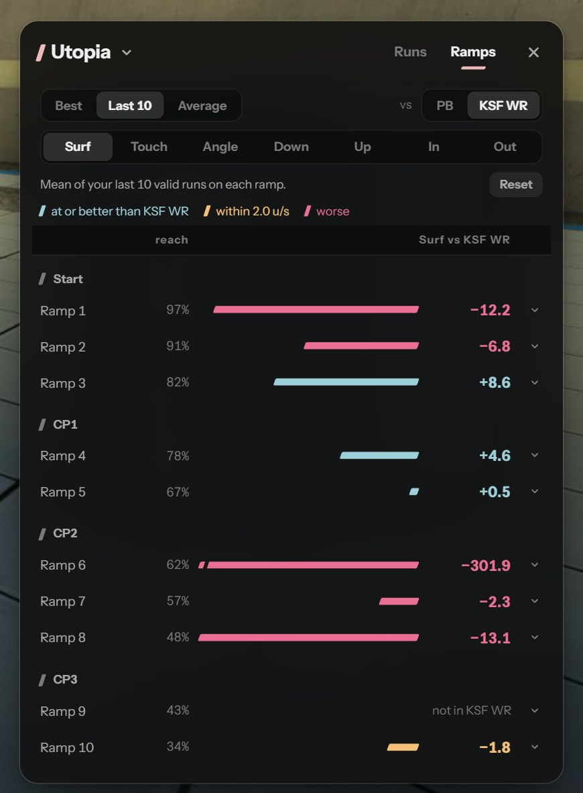
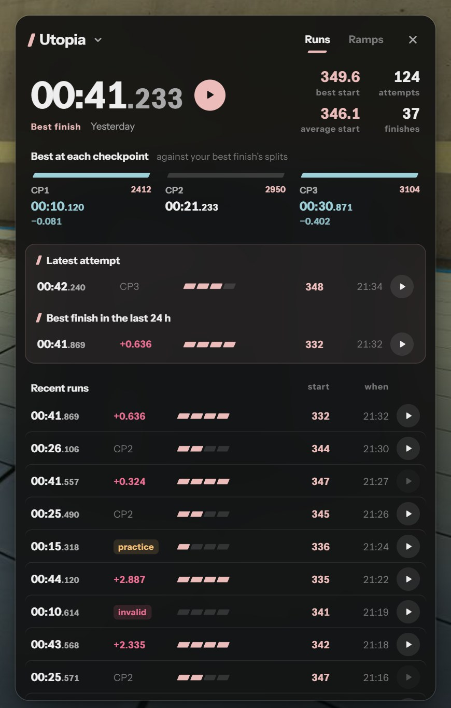

Nullbinds
For left/right or forward/jump, the most recently pressed key takes priority. Release it and the other takes over if still held. Forward/jump nulling releases forward input, not your momentum.
Surfd QoL adds cinematic replays, ramp-by-ramp feedback and local run history to surfd.net.
For desktop Chrome 118+, Edge, Brave and Opera.


Add your PB, recent best, a record or a leaderboard run as a ghost. Watch in real time or line them up side by side, and switch between POV, Steady and Cinematic cameras.
In a single-run replay or POV, the timeline shows graded ramp touches and saved locations. Use Saveloc to bookmark a moment, then load it in practice after leaving the replay.
The custom replay bar is on by default; switch to Surfd's bar under QoL → History. In Steady or Cinematic with other runs added, the watched run's marks hide and Saveloc is disabled.
More about replays
The compact HUD shows your speed, checkpoint gaps and what the last flight and ramp cost you. Compare ramp feedback with your PB, the record or custom thresholds.
See your prestrafe exit speed and height above the start platform. Choose individual HUD elements and adjust their colours, vertical position and size.
An optional experimental tint shows energy loss in the speed number. Speed and timer text have separate refresh rates; neither caps the game's frame rate.
How the HUD works


Both are optional and off by default. Enable them under QoL → Controls.
For left/right or forward/jump, the most recently pressed key takes priority. Release it and the other takes over if still held. Forward/jump nulling releases forward input, not your momentum.
Add a one-tick crouch to each jump for the crouched jump impulse without staying crouched. Use Space or choose another free key.
Open Find a server in Surfd. When community rooms are listed, choose Community beside the region filters. Enter a room code above the list, open a shared link, or choose Host a room to make one.
Everyone needs Surfd QoL. Hosting also needs a surfd.net account and an open tab. Share a room code or link.
More about community rooms
Open Runs for your latest attempt, recent runs and best recorded finish, with replays.
In Ramps, compare your best, average or the mean of your last 10 measurements on each ramp against your PB or the WR. See which ramps cost you the most speed.
Settings and recorded runs stay in your browser.
More about run history

Get into maps sooner, at full texture quality. Textures outside your starting view can finish loading while you surf.
The extension isn't on the Chrome Web Store, so you'll load it into your browser yourself.
Download the zipFor desktop Chrome 118 or newer, Edge, Brave and Opera. Firefox is not supported.
Keep the unzipped folder somewhere it can stay; your browser loads the extension from it.
Paste the address for your browser into its address bar.
chrome://extensionsedge://extensionsbrave://extensionsopera://extensionsThe switch is on your browser's extensions page. Enabling it reveals the Load unpacked button.
Choose the unzipped folder that contains manifest.json.
The tab reloads once while the extension hooks in. Find its settings under QoL in the game menu.
Updates are manual. Download and unzip the latest zip, replace the contents of the folder you loaded, reload the extension on your extensions page, then refresh Surfd. Your settings and saved runs stay in your browser.
Your browser shows a “started debugging this browser” bar because the extension uses debugger permission to patch the game script as it loads and read its physics. It only attaches to surfd.net. You can close the bar; everything already loaded keeps working until you reload the page.